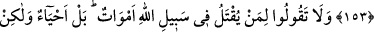
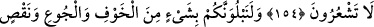
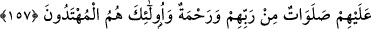

SABIR VE NAMAZ
153. Ey îmân edenler! Sabır ve namaz ile Allah’dan yardım isteyin. Çünkü Allah
muhakkak sabredenlerle beraberdir.
154. Allah yolunda öldürülenlere “ölüler” demeyin. Bilakis onlar diridirler, lâkin
siz anlayamazsınız.
155. Andolsun ki sizi biraz korku ve açlık; mallardan, canlardan ve ürünlerden
biraz azaltma (fakirlik) ile deneriz. (Ey Peygamber!) Sabredenleri müjdele!
156. O sabredenler, kendilerine bir belâ geldiği zaman: Biz Allah’ın kullarıyız ve
biz O’na döneceğiz, derler.
157. İşte Rablerinden bağışlamalar ve rahmet hep onlaradır. Ve doğru yolu
bulanlar da onlardır.
Ey mü’minler! Nefsin arzularını terketmek ve günahlardan kaçınmak gibi nefse ağır
gelen konularda sabır ve namaz ile Allah’dan yardım dileyin. Şüphesiz namaz,
ibâdetlerin temeli, mü’minlerin mîrâcı ve Allah’ın ecrine nâil olunacak ibâdettir.
Rivâyet olunduğuna göre Rasûlullah (s.a.), bir şey kendisine ağır geldiğinde hemen
namaza durur ve bu âyet-i kerîmeyi okuyarak Hakk Teâlâ’dan yardım dilerdi.[36]
Âyette sadece sabır ve namazın zikredilmesi, sabrın bâtınî, namazın ise zâhirî
amellerin en zoru olması sebebiyledir. Çünkü namaz Allah’ın tevfîki olmadan yapılması
kolay olmayan rükûnler, sünnetler, huzûr, hudû, teveccüh, sükûn gibi tâatın bütün
nevilerini ihtivâ etmektedir.
İsâmuddin şöyle der: “Yasaklardan sakınmak, emirleri yapmaktan öncedir. Çünkü,
süslenmeden önce temizlenmek gerekir. “Önce terk, sonra fiil; yâni önce sabır, sonra
namaz” zikredilmiştir. Nitekim kelime-i tevhidde de, önce nefiy, sonra isbât
gelmektedir.
Âyette hitab her mü’mine olduğu için, sadece namazla iktifâ edilmiştir. Çünkü bütün
mü’minler arasında müşterek olan husûs, îmândan sonra mâsiyetlere sabır ve namazdır.